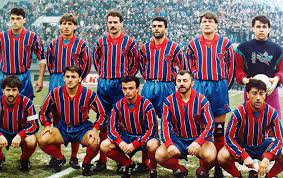
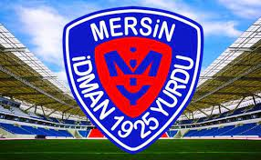

-MERSİN İDMAN YURDU-
Mersin İdman Yurdu Takımı
Mersin İdman Yurdu, adı üzerinde, Mersin’in futbol takımıdır. Oldukça önemli bir spor kulübüdür. Amatör liglerde başlayan ve günümüzde oldukça önemli başarılara imza atan ve takım hakkında merak edilen bütün bilgileri sizler için derliyoruz. İşte Mersin İdman Yurdu’nun tarihinden başlayarak günümüze kadar süren serüveni:
İdman Yurdu Tarihi
Mersin İdman Yurdu 1925 yılında kurulan, günümüzde de önemi bir futbol takımıdır. Kurulduğu dönemden 1949 yılına kadar olan zaman içerisinde bölge birinciliğini hiç kimseye bırakmamıştır. 1944 yılında ise, Türkiye Şampiyona’sında 3. Olmuştur.
1963 ila 1964 sezonu içerisinde de, başarılı olarak şampiyon oldu ve 2. Lige yükselmeyi başardı. Buradaki 3. Senesinde ise, artık profesyonel bir kadro oluşturarak, yoluna devam etmiştir. Ve İdman Yurdu takımı, o dönemde 1966 ila 1967 sezonunda, Türkiye 1. Lig’e yükselmiştir. O dönemdeki Lefter Küçükandonyadis sayesinde.
Kulüp başarılarını katlamaya devam ederek ilerlemekteydi. Tarihinin ilk anlamlı kupasını ise Başbakanlık Kupası adı altında kazanmıştır. Bunu da dönemin amatör spor takımı olan, İzmir Denizgücü’nü 2 – 0 mağlup ederek başarmıştır. Ödülünü ise, o dönemdeki başbakan olan Bülent Ecevit’ten almıştır. Başarısına devam eden takıp 1967 yılına kadar aralıksız 7 yıl boyunca 1. Ligde oynamaya devam etmiştir. O dönem aralığındaki en büyük başarısını ise, 1975 ila 1976 sezonunda kazanmıştır. 69 ila 70 sezonunda başarısına 4. Olarak bir gölge düşse de, yeniden liderliğe yükselmiştir. 11 sezon boyunca, mücadelesine, başarılı takım arkadaşları ile devam eden İdman Yurdu takımı, 1982 ila 1983 sezonunda sadece kalesinde tek bir gol görerek, o dönem en az gol yiyen takım unvanını da kazanmıştır.
Mersin İdman Yurdu takımının başarısı sadece bunlar ile de sınırlı değildir. O dönemlerde özellikle Türkiye’yi Kupa Galipleri Kupası’nda da temsil etmiş olan bu takım, 82 ila 83 yıllarında finalde Fenerbahçe’ye mağlup olmuştur. Bu kupayı kazanamayan takım, bu kupa için mücadeleyi Fenerbahçe’ye devretmiştir. O dönemde 2. Lige düşen takım, tam olarak 29 yıl sonra, yani 2010 ila 2011 sezonunda, Bank Asya ligini şampiyon olarak tamamlamıştır. Bu da adının yeniden Süper Lig’e yazdırmasına sebep olmuştur. Ancak 2012 ila 2013 sezonunda PTT 1. Lige düşmüştür.
İnişli – çıkışlı bir geçmiş yaşayan, İdman Yurdu, tarihinin büyük bir kısmını başarı ve liderlik ile tamamlamıştır. Bu başarısının en büyük sebebi, o dönemin oyuncularından ve antrenöründen kaynaklanmaktadır.

